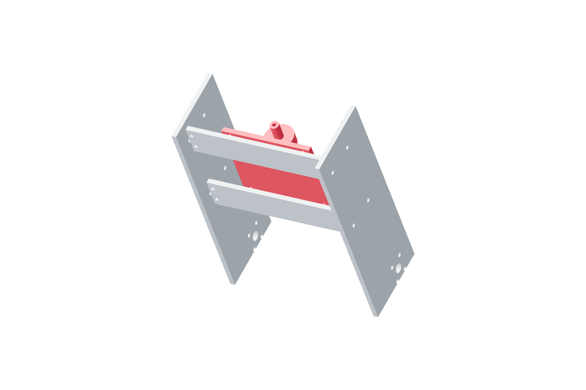

Gimbal / roll80 / 179
Install the roll spindle
Metal bearing housings support the output independently of the screw and belt. Assemble each axis while its load is supported.
Addroll-bearing-foot · two KP001 · 165 mm shaft · metal bearing through-bolts, washers and locking nuts · 4 M6 × 25 / two washers / locking nut
Tools / setup5 mm hex · wrenches · straight shaft / datum · support

- Start every housing and backing-plate fastener before seating a housing.
- Align both housings to the rear spindle. The bearings carry the cradle independently of the roll screw.
- Turn the unloaded shaft by hand in both directions, then seat the housing fasteners in opposite pairs.
- Fit the governed metal spacer stacks and tapped-end washer retainers; measure axial movement without preloading a housing by shifting its base.
Ready when
The output rotates freely and there is no loose housing, shaft end movement or misaligned pivot. A forced shaft or distorted bearing base is an alignment error. Release and re-seat the housings before adding the frame.